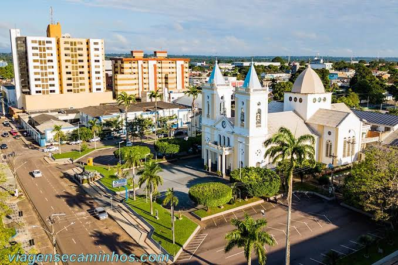
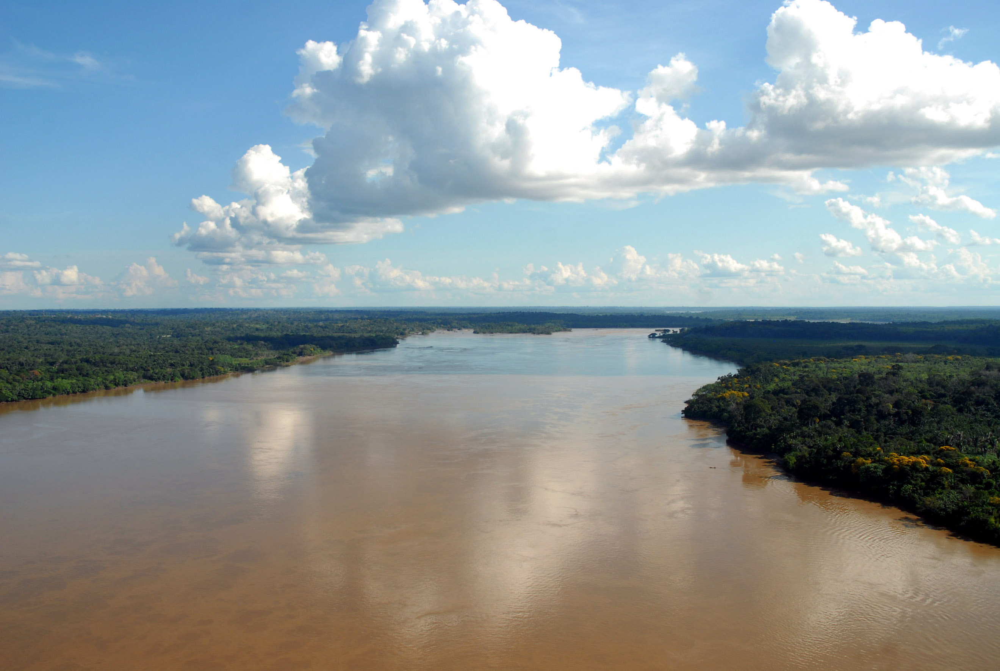
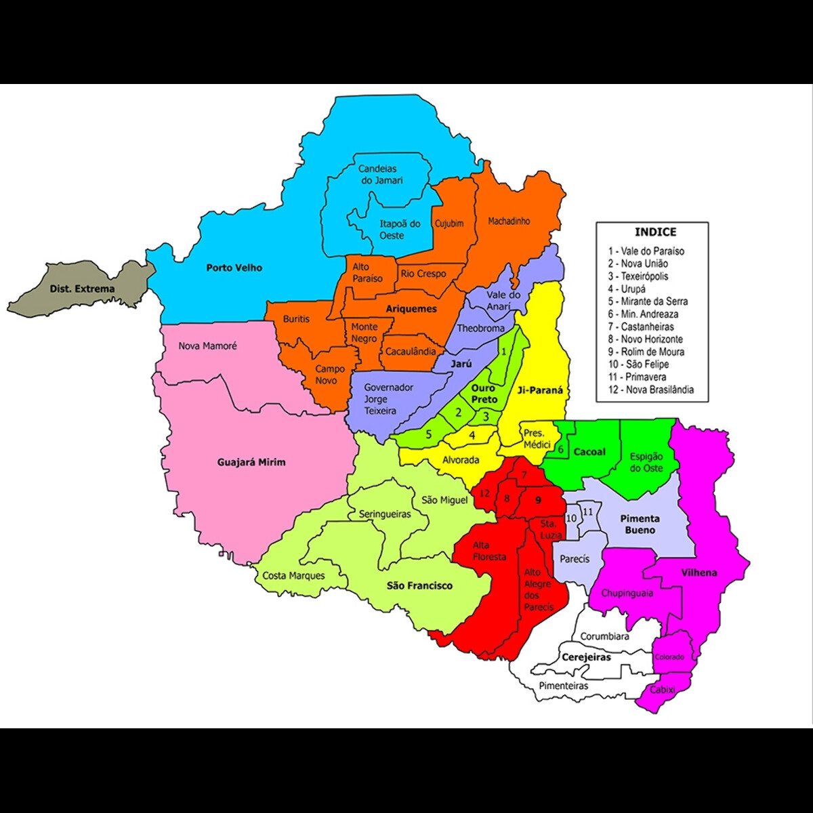

Visão Geral

Rondônia destaca-se por sua grande riqueza natural, localização estratégica na Amazônia Ocidental e importância econômica baseada na agropecuária, geração de energia e produção agrícola. O estado foi um dos que mais cresceram demograficamente durante o século XX devido aos fluxos migratórios vindos de diversas regiões do país.
Dados Gerais
| Informação | Descrição |
|---|---|
| Capital | Porto Velho |
| Região | Norte |
| Área | 237.576 km² |
| Gentílico | Rondoniense |
| Bioma | Amazônia |
| Fuso Horário | UTC−4 |
História
A ocupação da região intensificou-se durante o Ciclo da Borracha, no final do século XIX e início do século XX. A construção da Estrada de Ferro Madeira-Mamoré foi um marco importante para a integração econômica da região.
Em 1943 foi criado o Território Federal do Guaporé, posteriormente denominado Território Federal de Rondônia em homenagem ao marechal Cândido Rondon. O estado foi oficialmente criado em 1981.
Geografia

O relevo é formado por áreas de planaltos, depressões e extensas regiões de floresta tropical. O Rio Madeira é o principal curso d'água do estado, exercendo papel fundamental na navegação e no desenvolvimento econômico.
Economia
A economia rondoniense está baseada principalmente na agropecuária, agricultura, geração de energia elétrica, comércio e indústria.
O estado ocupa posição de destaque na produção de carne bovina, leite, soja, milho e café, além de abrigar importantes usinas hidrelétricas.
Cultura
A cultura de Rondônia resulta da influência de migrantes oriundos de diversas regiões brasileiras, além da contribuição dos povos indígenas e comunidades tradicionais amazônicas.
Festivais folclóricos, manifestações religiosas, culinária típica amazônica e artesanato regional são elementos marcantes da identidade cultural do estado.
Turismo

Entre os principais destinos turísticos estão o Parque Nacional de Pacaás Novos, o Vale do Guaporé, a Estrada de Ferro Madeira-Mamoré, as reservas ambientais amazônicas e as praias fluviais formadas durante o período de estiagem.
Mapa do Estado
